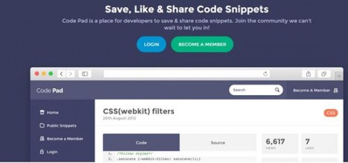
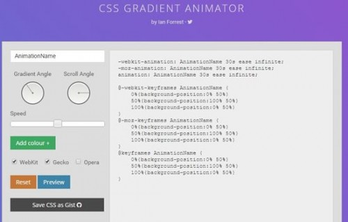

Web開発において、CSSはページを美しくし、レイアウトを設定するための最も効果のな技術です。しかし問題は、CSSがマークアップ言語であり、構文構造が非常に緩く、厳密ではないことです。Webプログラマーは、自分や他人のCSSファイルに、大量の冗長なコードやエラー、あるいは大幅に最適化できる箇所があることにしばしば気づきます。JavaやC言語などの静的プログラミング言語をよく使っているなら、実用のなIDEツールがプログラミングの効率を大幅に向上させることに気づくでしょう。Eclipseのように、コードの問題をリアルタイムに自動分析する統合開発環境は典型的な例です。では、CSSプログラマーにもそのような支援ツールはあるのでしょうか？
以下で紹介する10個のツールはすべてオンラインアプリケーションであり、自分のコンピュータにインストールする必要はありません。インターネットに接続できれば、それらを使用できます。これらのツールのほとんどは非常に簡単に使えますが、コツが必要な部分もあります。
CSS問題チェックツール：CSS Lint

CSS Lintは、CSSファイルの品質を検証するオープンソースのツールです。元々はNicholas C. ZakasとNicole Sullivanによって作成され、最初のバージョンは2011年6月のVelocityカンファレンスでリリースされました。CSS Lintの検出ルールにはエラーと警告が含まれます。セレクタやプロパティの記述が正しくない、中括弧を忘れた、セミコロンを多く書きすぎたなどの場合、解析エラーが表示され、解析エラーが優先的に表示されます。
CSSコード分析・統計ツール：CSS Stats

Css Statsは、オンラインのCSSコード分析ツールです。ウェブサイトのCSS URLを入力するだけでCSSコードの分析ができます。Css Statsは、フロントエンドのウェブデザイナーがウェブサイトのCSSコードを分析するための強力なツールであり、CSSコード内のルール、フォントサイズ、幅・高さ、色の数などを統計できます。
ウェブデザイナーにとって、ウェブページのCSSコードを共有することは必須の作業です。ウェブサイトのデザインで何種類のフォント、何種類のフォントサイズ、何種類の色、何種類の背景色が使われているかを統計し、CSSコードの詳細な統計数値があって初めて、ウェブサイト全体のデザイン後の効果を分析できます。Css Statsは、Google、Yahoo、Twitter、Facebook、Tumblrなどの人気ウェブサイトのCSS分析データも提供しています。
CSSコード最適化・圧縮ツール：CSS Shrinks

CSS Shrinksは、CSSのサイズを大幅に圧縮できます。多くのWebプログラマーが書いたCSSコードには、冗長な構文や空白などが大量に含まれています。このツールは、CSSの正確性に影響を与えることなく、CSSの構文を最適化し、不要なスペースや空行を除去して、CSSのサイズを顕著に圧縮し、帯域幅の無駄を大幅に削減します。
CSSコード整理ツール：ProCSSor

ProCSSorは、CSSコードを基本的に最適化する機能に加えて、多数のカスタマイズオプションを提供します。例えば、CSSルール、CSSプロパティ、CSS構文の最適化オプションを設定できます。また、新しいCSS3プロパティやルールに対する、さまざまなブラウザでの非互換の代替案も提供します。
Codrops CSS 構文リファレンス

Codrops CSSリファレンスは、内容が豊富で包括的であり、インターフェースもすっきりとして分かりやすいです。このツールを使って、CSSの最も重要で包括的な知識を習得できます。CSSナレッジベースは、擬似クラス、プロパティ、関数、データ型、概念、ルールなど、いくつかのカテゴリに分かれています。
CSS3ブラウザ互換性サポート状況確認ツール：Can I Use

「Can I Use」では、すべてのWeb新機能の各ブランドのブラウザおよび各ブランドのブラウザの異なるバージョンでの互換性を見つけることができます。対象ユーザーがどのブラウザを使用しているかをを握していれば、この表はウェブサイト構築に非常に役立ちます。caniuse.comを開くと、そのホームページにHTML5、CSS3などのWeb新機能がすべてリストアップされています。特定の機能のブラウザ別の互換性を確認したい場合は、クリックするだけで済みます。例えば、@font-face Webフォントの各ブラウザでの互換性を見る場合、CSSエリアの最初の項目をクリックすると、すべてのブラウザのバージョンが一覧表示された表が表示され、各ブラウザの@font-face Webフォントのサポート状況が色で表されます。赤はサポートなし、薄緑は部分サポートを意味します。リストされているブラウザには、Androidシステムブラウザなどのスマートフォンやタブレット端末のブラウザも含まれます。このように包括のであるため、ウェブサイトをデザインする際、対象ユーザーに応じてCSSやJavaScriptの高度な機能を選択のに使用し、ユーザーエクスペリエンスを向上させることができます。
あなたのコードがCSS標準に適合しているかチェック：W3C CSS Validation Service

このツールは、CSS構文が正しいかどうか、W3C CSS標準に適合しているかをチェックするためのものです。ご存知のように、初期のIEから、さまざまなブラウザが独自の方言を実装しており、これらの方言はブラウザ間で互換性がありません。しかし、Webページを開発する際には、さまざまなブラウザの互換性を最大限に考慮する必要があります。最善の方法は、W3C CSS標準仕様に従うことです。W3C CSS Validation Serviceは、CSSの問題を検証するためのもので、どの構文、どのプロパティ、どのルールに問題があるかを通知します。
CodePad

Codepad.orgはとても面白いウェブサイトです。そのホームページはとてもシンプルで、左側にはコンパイルして実行できるプログラミング言語のリストがあり、右側にはプログラムを入力するための入力ボックスがあります。入力ボックスの下には「Run Code」チェックボックスと「Submit」送信ボタンがあります。
その操作も非常に簡単です。まず、コンパイルして実行したいプログラミング言語を選択し、入力ボックスにプログラムのソースコードを貼り付けるか入力します。そして、送信をクリックすると、プログラムのコンパイルエラーのメッセージや実行結果を見ることができます。
もしかすると退屈に感じるかもしれませんが、これは特定の状況では非常に役立つと思います。特に、コンパイラが見つからず、コードを検証したいときには、そのような場面はかなり多いものです。特に、すべての言語を実行できるコンピュータを持つことは難しいです。もしあるとすれば、それは間違いなく自分のパソコンでしょう。自分のパソコンを使えないときには、焦ってしまいますよね。さらに、このサービスはとても面白いと思います。なぜなら、これを使えば、スマートフォンでどんな言語のプログラムでも書けるからです。
現在、このウェブサイトは以下の言語をサポートしています——C、C++、D、Haskell、Lua、OCaml、PHP、Perl、Plain Text、Python、Ruby、Scheme、Tcl。
CSSアニメーション生成ツール：Gradient Animator

これは、CSS GradientとCSS Animation技術を使用して実装された動的背景生成ツールです。非常に使いやすく、マウスを数回クリックするだけで、モダンな雰囲気のグラデーション動的背景コードが生成されます。CSSグラデーション背景を滑らかに移動させることができ、移動角度、移動速度、グラデーションの角度を設定できます。すべてのモダンブラウザとIE 10+をサポートしています。Webページのオープニング背景に最適です。
Webカラーツール：CSS Colours
名前が示すとおり、このツールはWebデザイナーが色を探しやすくするためのものです。さまざまな色の視覚効果、色の英語名、RGB値、16進数値を提供しており、非常に便利に使用できます。
出典：http://www.webhek.com/10-css-tools